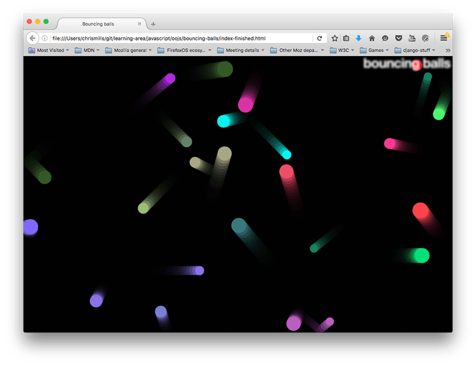

In previous articles we looked at all the essential JavaScript object theory and syntax details, giving you a solid base to start from. In this article we dive into a practical exercise, giving you some more practice in building custom JavaScript objects, with a fun and colorful result.
| Prerequisites: | Basic computer literacy, a basic understanding of HTML and CSS, familiarity with JavaScript basics (see First steps and Building blocks) and OOJS basics (see Introduction to objects). |
|---|---|
| Objective: | To get some practice with using objects and object-oriented techniques in a real world context. |
Let's bounce some balls
In this article we will write a classic "bouncing balls" demo, to show you how useful objects can be in JavaScript. Our little balls will bounce around on the screen, and change color when they touch each other. The finished example will look a little something like this:

This example will make use of the Canvas API for drawing the balls to the screen, and the requestAnimationFrame API for animating the whole display — you don't need to have any previous knowledge of these APIs, and we hope that by the time you've finished this article you'll be interested in exploring them more. Along the way we'll make use of some nifty objects, and show you a couple of nice techniques like bouncing balls off walls, and checking whether they have hit each other (otherwise know as collision detection).
Getting started
To begin with, make local copies of our index.html, style.css, and main.js files. These contain the following, respectively:
- A very simple HTML document featuring an
<h1>element, a<canvas>element to draw our balls on, and elements to apply our CSS and JavaScript to our HTML. - Some very simple styles, which mainly serve to style and position the
<h1>, and get rid of any scrollbars or margin round the edge of the page (so that it looks nice and neat). - Some JavaScript that serves to set up the
<canvas>element and provide a general function that we're going to use.
The first part of the script looks like so:
var canvas = document.querySelector('canvas');
var ctx = canvas.getContext('2d');
var width = canvas.width = window.innerWidth;
var height = canvas.height = window.innerHeight;
This script gets a reference to the <canvas> element, then calls the getContext() method on it to give us a context on which we can start to draw. The resulting variable (ctx) is the object that directly represents the drawing area of the canvas and allows us to draw 2D shapes on it.
Next, we set variables called width and height, and the width and height of the canvas element (represented by the canvas.width and canvas.height properties) to equal the width and height of the browser viewport (the area that the webpage appears on — this can be got from the Window.innerWidth and Window.innerHeight properties).
You'll see here that we are chaining multiple assignments together, to get the variables all set quicker — this is perfectly OK.
The last bit of the initial script looks as follows:
function random(min, max) {
var num = Math.floor(Math.random()*(max-min)) + min;
return num;
}
This function takes two numbers as arguments, and returns a random number in the range between the two.
Modeling a ball in our program
Our program will feature lots of balls bouncing around the screen. Since these balls will all behave in the same kind of way, it makes sense to represent them with an object. Let's start by adding the following constructor to the bottom of our code.
function Ball() {
this.x = random(0,width);
this.y = random(0,height);
this.velX = random(-7,7);
this.velY = random(-7,7);
this.color = 'rgb(' + random(0,255) + ',' + random(0,255) + ',' + random(0,255) +')';
this.size = random(10,20);
}
Here we define some properties that every one of our balls needs to function to in our program:
xandycoordinates — each ball is initially given a random horizontal and vertical coordinate where it will start on the screen. This can range between 0 (top left hand corner) to the width and height of the browser viewport (bottom right hand corner).- horizontal and vertical velocity (
velXandvelY) — each ball is given random values to represent its velocity; in real terms these values will be regularly added to thex/ycoordinate values when we start to animate the balls, to move them by this much on each frame. color— each ball gets a random color to start with.size— each ball gets a random size, a radius of between 10 and 20 pixels.
This sorts the properties out, but what about the methods? We want to actually get our balls to do something in our program.
Drawing the ball
First add the following draw() method to the Ball()'s prototype:
Ball.prototype.draw = function() {
ctx.beginPath();
ctx.fillStyle = this.color;
ctx.arc(this.x, this.y, this.size, 0, 2 * Math.PI);
ctx.fill();
}
Using this function, we can tell our ball to draw itself onto the screen, by calling a series of members of the 2D canvas context we defined earlier (ctx). The context is like the paper, and now we want to commend our pen to draw something on it:
- First, we use
beginPath()to state that we want to draw a shape on the paper. - Next, we use
fillStyleto define what color we want the shape to be — we set it to our ball'scolorproperty. - Next, we use the
arc()method to trace an arc shape on the paper. Its parameters are:- The
xandyposition of the arc's center — we are specifying our ball'sxandyproperties. - The radius of our arc — we are specifying our ball's
sizeproperty. - The last two parameters specify the start and end number of degrees round the circle that the arc is drawn between. Here we specify 0 degrees, and
2 * PI, which is the equivalent of 360 degrees in radians (annoyingly, you have to specify this in radians). That gives us a complete circle. If you had specified only1 * PI, you'd get a semi-circle (180 degrees).
- The
- Last of all, we use the
fill()method, which basically states "finish drawing the path we started withbeginPath(), and fill the area it takes up with the color we specified earlier infillStyle."
You can start testing your object out already.
- Save the code so far, and load the HTML file in a browser.
- Open the browser's JavaScript console, and then refresh the page so that the canvas size change to the smaller visible viewport left when the console opens.
- Type in the following to create a new ball instance:
var testBall = new Ball();
- Try calling its members:
testBall.x testBall.size testBall.color testBall.draw()
- When you enter the last line, you should see the ball draw itself somewhere on your canvas.
Updating the ball's data
We can draw the ball in position, but to actually start moving the ball, we need an update function of some kind. Add the following code at the bottom of your JavaScript file, to add an update() method to the Ball()'s prototype:
Ball.prototype.update = function() {
if((this.x + this.size) >= width) {
this.velX = -(this.velX);
}
if((this.x - this.size) <= 0) {
this.velX = -(this.velX);
}
if((this.y + this.size) >= height) {
this.velY = -(this.velY);
}
if((this.y - this.size) <= 0) {
this.velY = -(this.velY);
}
this.x += this.velX;
this.y += this.velY;
}
The first four parts of the function check whether the ball has reached the edge of the canvas. If it has, we reverse the polarity of the relevant velocity to make the ball travel in the opposite direction. So for example, if the ball was traveling upwards (positive velX), then the horizontal velocity is changed so that it starts to travel downwards instead.
In the four cases, we are:
- Checking to see whether the
xcoordinate is greater than the width of the canvas (the ball is going off the right hand edge). - Checking to see whether the
xcoordinate is smaller than 0 (the ball is going off the left hand edge). - Checking to see whether the
ycoordinate is greater than the height of the canvas (the ball is going off the bottom edge). - Checking to see whether the
ycoordinate is smaller than 0 (the ball is going off the top edge).
In each case, we are including the size of the ball in the calculation because the x/y coordinates are in the center of the ball, but we want the edge of the ball to bounce off the perimeter — we don't want the ball to go halfway off the screen before it starts to bounce back.
The last two lines add the velX value to the x coordinate, and the velY value to the y coordinate — the ball is in effect moved each time this method is called.
This will do for now; let's get on with some animation!
Animating the ball
Now let's make this fun. We are now going to start adding balls to the canvas, and animating them.
- First, we need somewhere to store all our balls. The following array will do this job — add it to the bottom of your code now:
var balls = [];
All programs that animate things generally involve an animation loop, which serves to update the information in the program and then render the resulting view on each frame of the animation; this is the basis for most games and other such programs.
- Add the following to the bottom of your code now:
function loop() { ctx.fillStyle = 'rgba(0,0,0,0.25)'; ctx.fillRect(0,0,width,height); while(balls.length < 25) { var ball = new Ball(); balls.push(ball); } for(i = 0; i < balls.length; i++) { balls[i].draw(); balls[i].update(); } requestAnimationFrame(loop); }Our
loop()function does the following:- Sets the canvas fill color to semi-transparent black, then draws a rectangle of the color across the whole width and height of the canvas, using
fillRect()(the four parameters provide a start coordinate, and a width and height for the rectangle drawn). This serves to cover up the previous frame's drawing before the next one is drawn. If you don't do this, you'll just see long snakes worming their way around the canvas instead of balls moving! The color of the fill is set to semi-transparent,rgba(0,0,0,0.25), to allow the previous few frames to shine through slightly, producing the little trails behind the balls as they move. If you changed 0.25 to 1, you won't see them at all any more. Try varying this number to see the effect it has. - Creates a new instance of our
Ball(), thenpush()es it onto the end of our balls array, but only while the number of balls in the array is less than 25. So when we have 25 balls on screen, no more balls appear. You can try varying the number inballs.length < 25to get more of less balls on screen. Depending on how much processing power your computer/browser has, specifying several thousand balls might slow down the animation rather a lot! - loops through all the balls in the
ballsarray, and runs each ball'sdraw()andupdate()function to draw each one on the screen, then do the necessary updates to position and velocity in time for the next frame. - Runs the function again using the
requestAnimationFrame()method — when this method is constantly run and passed the same function name, it will run that function a set number of times per second to create a smooth animation. This is generally done recursively — which means that the function is calling itself every time it runs, so it will run over and over again.
- Sets the canvas fill color to semi-transparent black, then draws a rectangle of the color across the whole width and height of the canvas, using
- Last but not least, add the following line to the bottom of your code — we need to call the function once to get the animation started.
loop();
That's it for the basics — try saving and refreshing to test your bouncing balls out!
Adding collision detection
Now for a bit of fun, let's add some collision detection to our program, so our balls will know when they have hit another ball.
- First of all, add the following method definition below where you defined the
update()method (i.e. theBall.prototype.updateblock).Ball.prototype.collisionDetect = function() { for(j = 0; j < balls.length; j++) { if( (!(this.x === balls[j].x && this.y === balls[j].y && this.velX === balls[j].velX && this.velY === balls[j].velY)) ) { var dx = this.x - balls[j].x; var dy = this.y - balls[j].y; var distance = Math.sqrt(dx * dx + dy * dy); if (distance < this.size + balls[j].size) { balls[j].color = this.color = 'rgb(' + random(0,255) + ',' + random(0,255) + ',' + random(0,255) +')'; } } } }This method is a little complex, so don't worry if you don't understand exactly how it works for now. An explanation follows:
- For each ball, we need to check every other ball to see if it has collided with the current ball. To the end, we open up another
forloop to loop through all the balls in theballs[]array. - Immediately inside our for loop, we use an
ifstatement to check whether the current ball being looped through is the same ball as the one we are currently checking. We don't want to check whether a ball has collided with itself! To do this, we check whether the current ball'sx/ycoordinates and current velocity are the same as the loop ball. We then use!to negate the check, so that the code inside the the if statement only runs if they are not the same. - We then use a common algorithm to check the collision of two circles. We are basically checking whether any of the two circle's areas overlap. This is explained further in 2D collision detection.
- If a collision is detected, the code inside the inner
ifstatement is run. In this case we are just setting thecolorproperty of both the circles to a new random color. We could have done something far more complex, like get the balls to bounce off each other realistically, but that would have been far more complex to implement. For such physics simulations, developers tend to use a games or physics library such as PhysicsJS, matter.js, Phaser, etc.
- For each ball, we need to check every other ball to see if it has collided with the current ball. To the end, we open up another
- You also need to call this method in each frame of the animation. Add the following below the
balls[i].update();line:balls[i].collisionDetect();
- Save and refresh the demo again, and you'll see you balls change color when they collide!
Note: If you have trouble getting this example to work, try comparing your JavaScript code against our finished version (also see it running live).
Summary
We hope you had fun writing your own real world random bouncing balls example, using various object and object-oriented techniques from throughout the module! This should have given you some useful practice in using objects, and good real world context.
That's it for object articles — all that remains now is for you to test your skills in the object assessment.
See also
- Canvas tutorial — a beginner's guide to using 2D canvas.
- requestAnimationFrame()
- 2D collision detection
- 3D collision detection
- 2D breakout game using pure JavaScript — a great beginner's tutorial showing how to build a 2D game.
- 2D breakout game using Phaser — explains the basics of building a 2D game using a JavaScript game library.